Создание игр в Roblox Studio
Работа с ландшафтом
Это занятие начинает новый модуль, посвященный работе с ландшафтом и изучению роли художника по окружению.
Роль художника по окружению
Художники по окружению - это люди которые создают ландшафты и локации в играх. Это отдельная, очень важная и интересная специальность, на данный момент одна из самых востребованных в индустрии.
На данном занятии мы узнаем, как пользоваться базовыми инструментами работы с ландшафтом, который предоставляет Roblox Studio.
Создаем и настраиваем новый ландшафт
Генерация нового ландшафта
Для начала практической части, создадим новый проект из шаблона Flat Terrain.
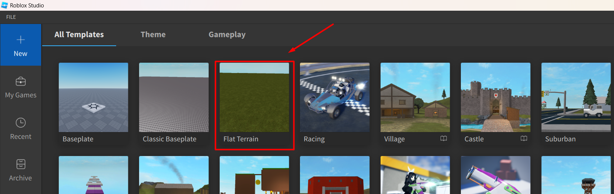В этом шаблоне присутствует только пустой плоский ландшафт.
Откроем панель работы с ландшафтом - нажмем на кнопку Editor.
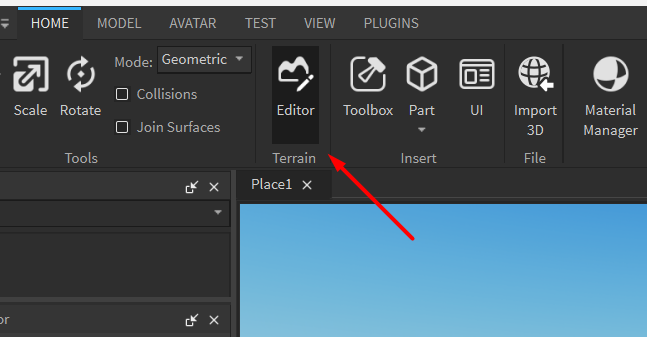В открышемся окне нажмем на кнпку Clear, чтобы удалить базовый ландшафт - это необходимо для генерации нового ландшафта. После этого нажмем на кнопку Generate.
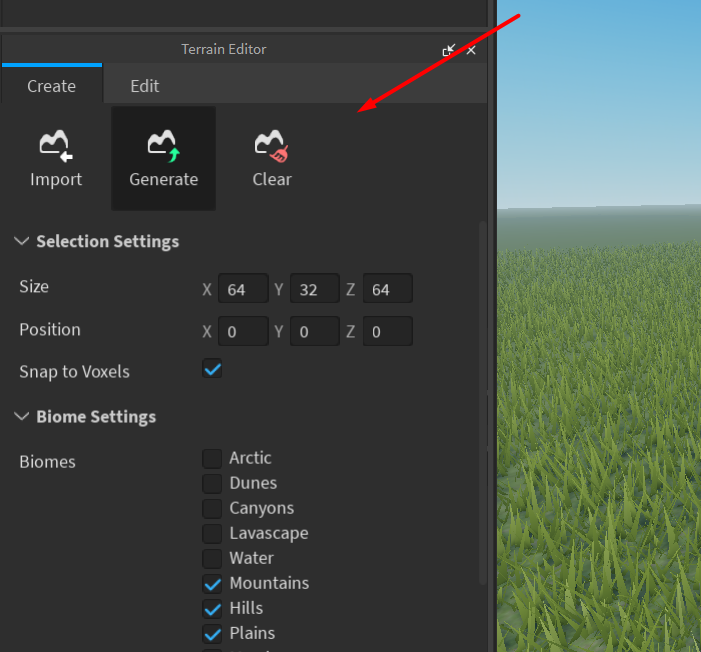После нажатия на Generate появятся настройки генерации ландшафта. Настроим размеры ландшафта и выберем нужные биомы в разделе Biome Settings.
Параметр Biome Size задает минимальный размер каждого биома. Seed указывает ключ случайной генерации ландшафта.
После настройки параметров нажмем на кнопку Generate и дождемся окончания генерации ландшафта:
Запустим игру и посмотрим на результаты нашей ландшафтной генерации
Добавляем элементы ландшафта. Инструмент Drow - Add
Переключимся на третью вкладку окна Terrain Editor - Edit. В этой кладке находятся инструменты для работы с ландшафтом. Выберем инструмент Drow (режим Mode - Add) - это инструмент добавления ландшафта.
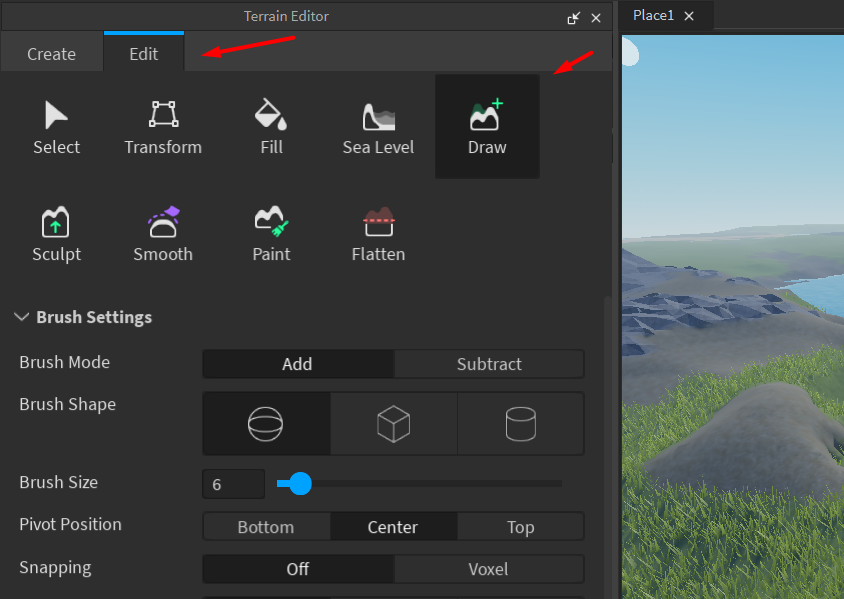Drow (Add) работает с привязкой к рабочим плоскостям - они отображаются сеткой под курсором. Сетка проецируется в зависимости от положения и угла камеры.
Настроим инструмент и создадим гору, пользуясь различными вариациями параметров кисти:
- Сфера, куб и цилиндр изменяют форму кисти - используется для создания разных форм ландшафта.
- Base Size - размер кисти.
- Pivot Position - положение кисти относительно курсорa.
В настройках материалов (раздел Material Settings) можно выбрать материал для работы. Параметр Auto Material сохраняет материалы участка ландшафта, автоматически подбирая материал по месту применения.
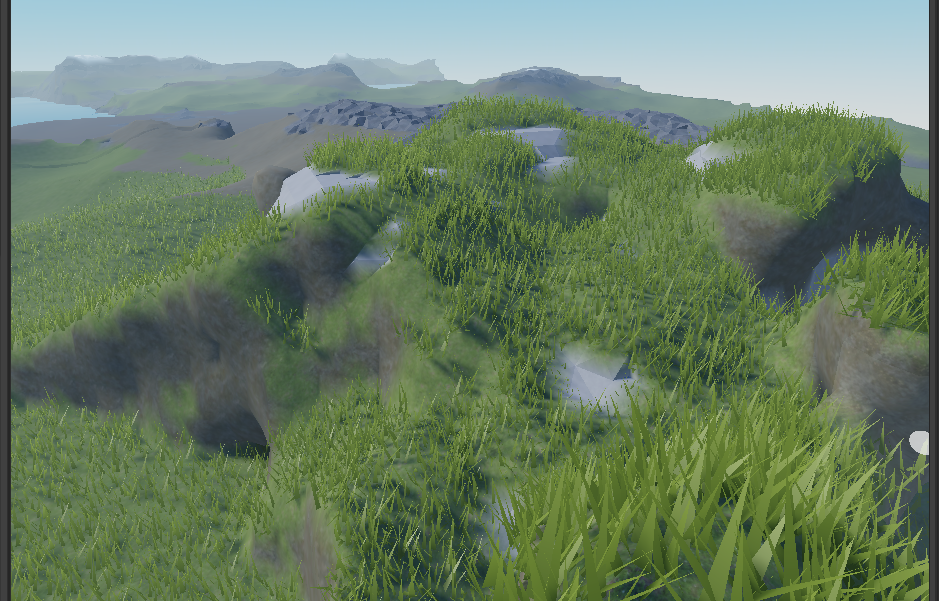Создаем пещеры и проходы. Инструмент Draw - Subtract
Переключимся на следующий инструмент - Subtract (Draw -> Mode = Subtract). Он работает по тем же принципам, что и Add, но вычитает геометрию.
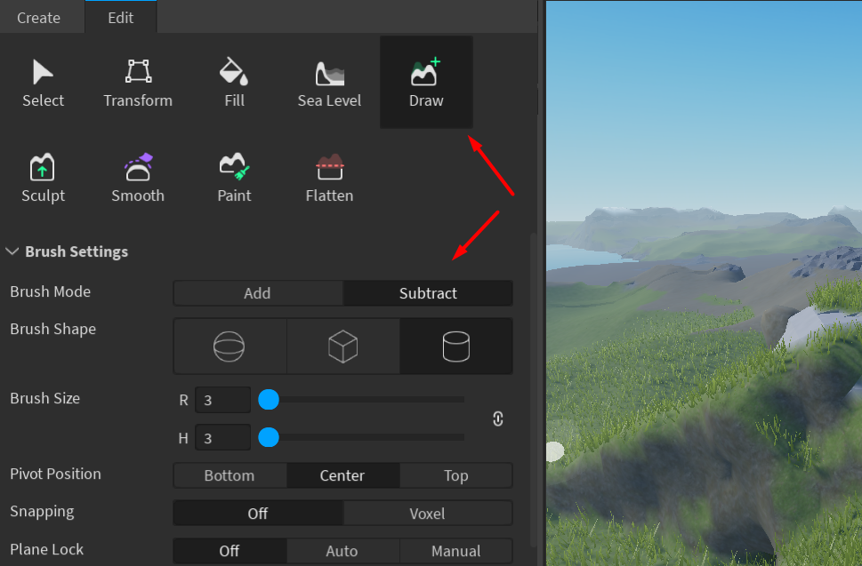Настроим с его помощью пещеры и проходы в горе. Попробуем разные настройки Pivot Position.
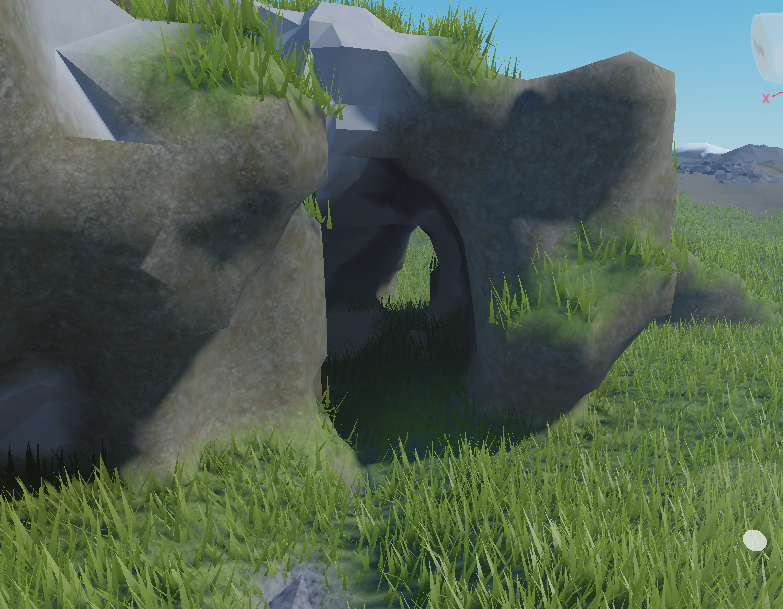Наращиваем и уменьшаем ландшафт. Инструменты Grow и Erode (Sculpt: Add и Subtract)
Следущие инструменты, которые мы рассмотрим - Grow и Erode (Sculpt: Add и Subtract).
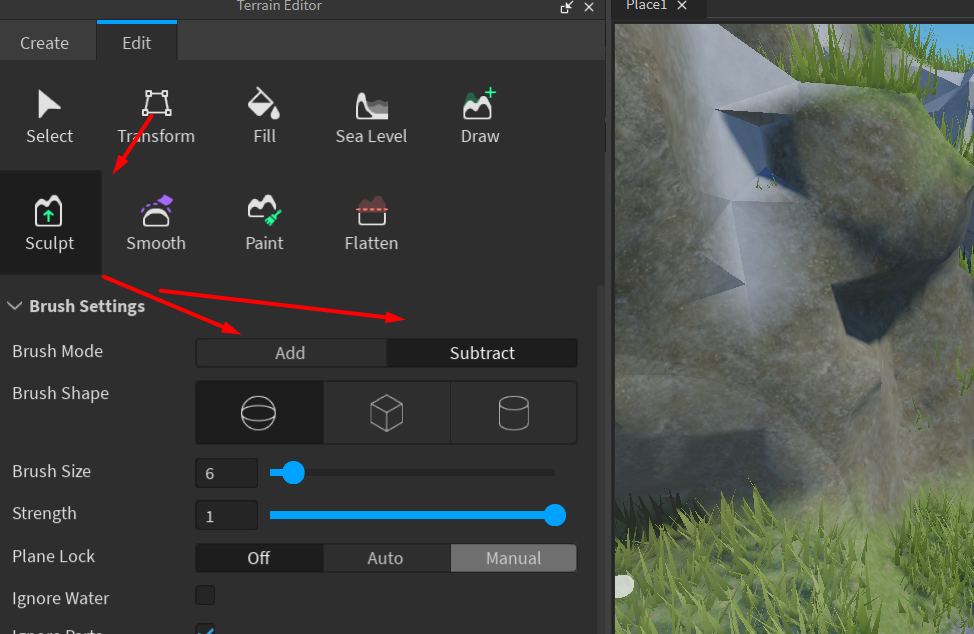Это также парные инструменты, которые позволяют наращивать и уменьшать ландшафт, но они не привязяаны к сетке. Используются для того, чтобы «выдавить» или «вдавить» ландшафт по форме кисти.
В отличие от предыдущих инструментов, эти два инструмента имеют параметр Strength, который задает силу воздействия.
Пользуясь этими инструментами, добавим дополнительные детали к созданной горе, сделаем тропу, ведушую к вершине.
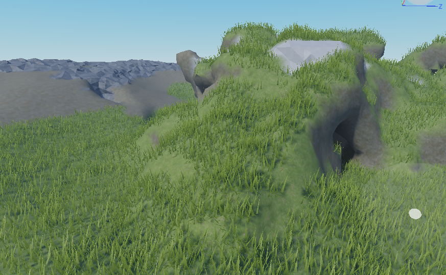Сглаживаем и выравниваем ландшафт. Инструменты Smooth и Flatten
После знакомства с инструментами наращивания ландшафта перейдем к инструментам сглаживания и выравнивания - Smooth и Flatten.
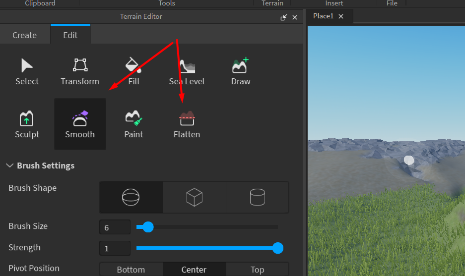Smooth позволяет сгладить неровности ландшафта и привести его к средней величине. Используем Smooth для того, чтобы сгладить неровности, полученные при работе с предыдущим инструментами.
Будем менять параметр Strength чтобы контролировать силу применения инструмента.
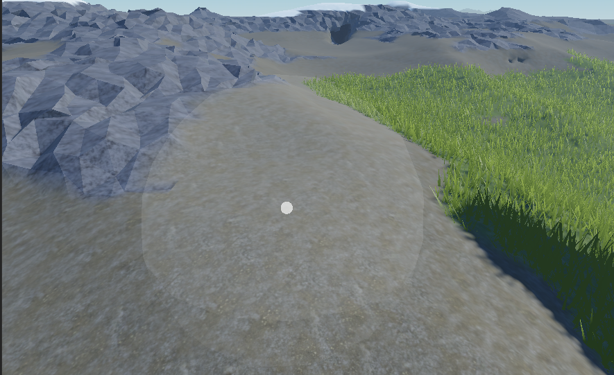Flatten позволяет быстро выровнять поверхность в горизонтальной плоскости.
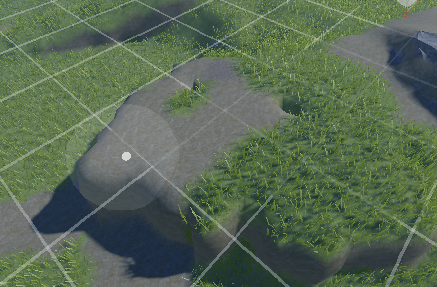В настройках по умолчанию Flatten выравнивает абсолютно всё, что попадает в зону действия: ландшафт, находящийся ниже выбранной высоты, поднимается наверх, выше - опускается вниз.
Параметр Flatten Mode позволяет изменить алгоритм применения этого инструмента: средний режим будет влиять только на участки ландшафта, находящиеся ниже выбранной высоты, первый (левый) режим будет воздействовать только на то, что находится выше.
С помощью инструмента Flatten можно делать более резкие и обрывистые переходы поверхностей, таким образом уточняя подножия и обрывы горы. Попрактикуемся в использовании этого инструмента в разных модификациях и с разными настройками параметров Strength на уже созданной горе.
Перекрашиваем участки ландшафта. Инструмент Paint
Следующие два инструмент позволяют работать с материалами, не затрагивая геометрию ландшафта.
Первый инструмент - Paint, с его помощью можно перекрасить участок ландшафта, добавив новый материал.
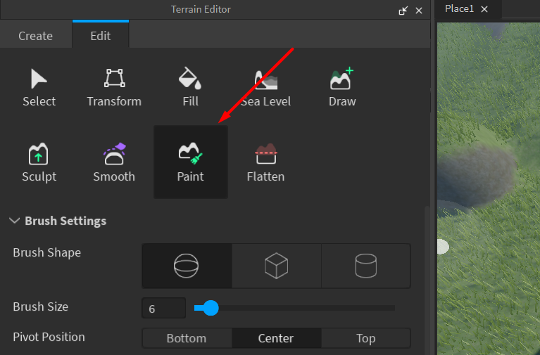В нижнем разделе Material Settings можно выбрать материал, который будет наноситься.
Используя этот инструмент, добавим новые материалы на ландшафт, например снежную вершину:
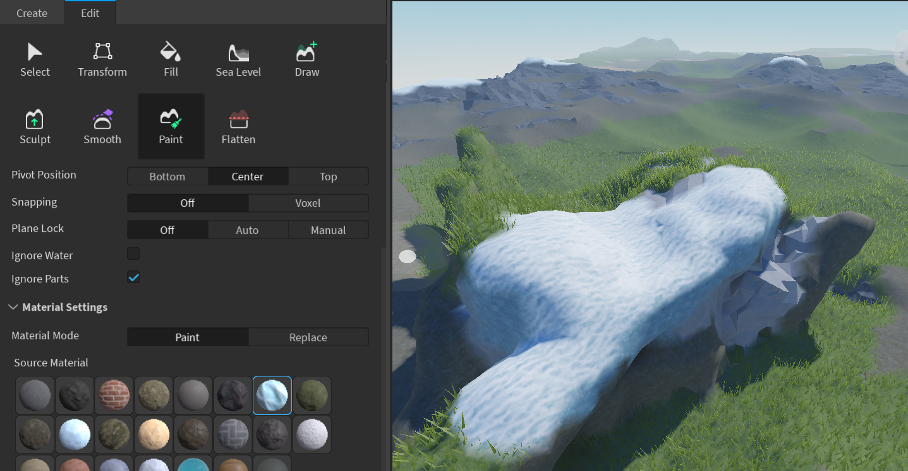Изменяем и перекрашиваем материалы. Инструмент Replace
Инструмент Replace позволяет перекрасить один материал, не затрагивая другие материалы на сцене.
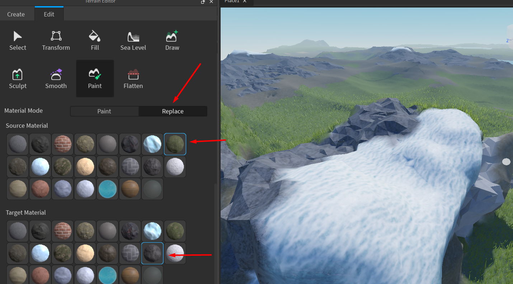Через параметр Source Material задаем желаемый материал. В параметре Target Material укажем новый материал. С помошью этого инструмента заменим один из материалов на каком-либо участке ландшафта на другой.
Можно добавить дополнительные детали по кромке какого-нибудь материала.
Настраиваем глобальный уровень воды Инструмент Sea Level
Инструмент Sea Level на данный момент работает не совсем корректно, возможны баги с очисткой водных пространств! Вероятно, позже эти баги исправит техническая поддержка Roblox. Пока что данный инструмент можно заменять другими инструментами. Изучим его настройки на будущее)
Последний инструмент работа с ландшафтом это Sea Level. Этот инструмент позволяет изменять глобальный уровень высоты воды.
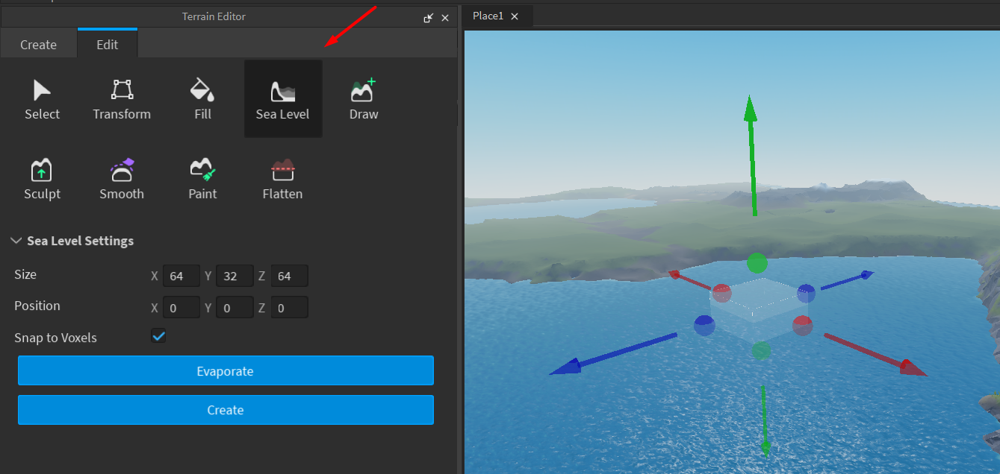Для начала работы с этим инструментом при помощи манипуляторов сделаем так, чтобы весь ландшафт попал в синий куб, появившийся на сцене - это область работы инструмента. После этого нажмем на кнопку Evaporate - она уничтожит всю воду, которая есть в сцене. Выровняем верхнюю часть куба по желаемой новой высоте воды и нажмем на кнопку Create уровень заполнится водой в указанном объеме.
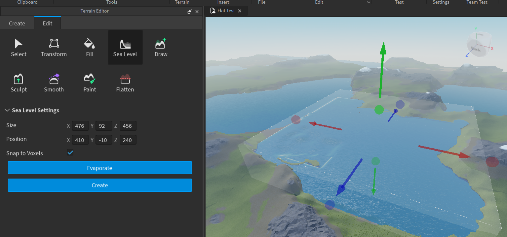Домашкаа 😁
Домашнее задание заключается в том, чтобы самостоятельно сгенерировать свой собственный ландшафт и создать в нем две локации:
- Естественную арку через реку: 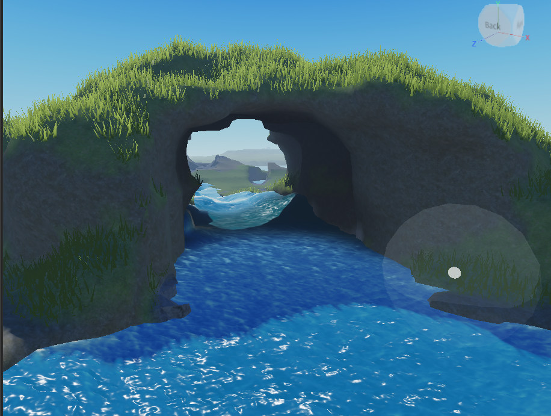
- Пещеру в горе: